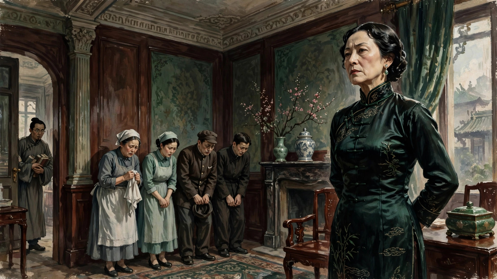
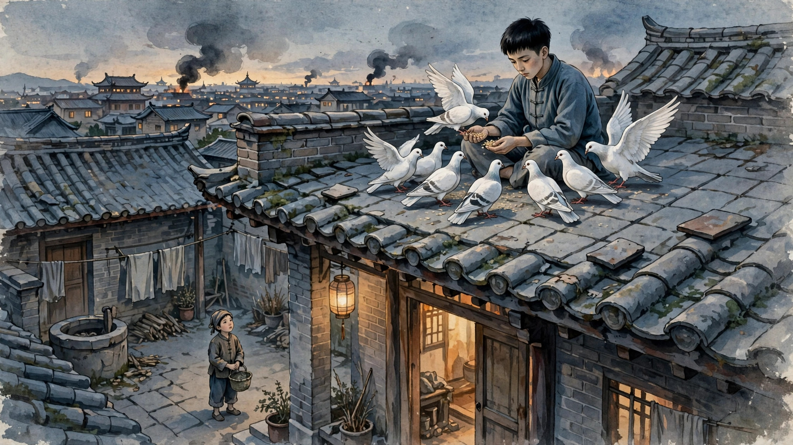

第一次被小说女角色激怒和恶心到看不下去了
欢迎点击上面的名片关注我，您的支持是我持续创作的最大动力。
在看一个长篇《战争和人》，看到第四卷看不下去了。不是小说的问题，是我有些情绪难以抑制，只好掩卷稍歇，来发发牢骚。
小说本身还不错，故事、文笔都是一流的，对得起茅奖。让我产生上述极端情绪的是书里一个角色，一个叫方丽清的旧上海女人，可把我气坏了（如果有人看过这部小说，看到这儿就应该能理解我的感觉了）。

被一个小说里的角色恶心甚至激怒到不得不停下来，可以说是我阅读生涯中的第一次。就冲这一点，我给这部小说和小说作者点一个大大的赞（真心的不是反话）。
在讲这个奇葩角色之前，给没看过这部小说的朋友简单介绍下小说截至第四卷的大概故事内容（介意剧透的可以跳过，但建议读读有助于理解方丽清这个角色）。
小说从西安事变开始，但并没有采用传统的宏大叙事，而是从南京中央国民政府一个高官的视角切入。这位高官叫童霜威，应该是虚构人物。他本是大学里小有名气的一名法学学者，后入仕进入中央政府，负责官员监察之类的司法工作。他在政府中的地位有点不上不下。说上吧，没有啥实权；说下吧，他时不时和于右任、汪精卫等国民党元老“谈笑风生”。不管怎么说，瘦死的骆驼比马大，他再不济也是个中央级的官员，相对地方官来说还是有一定地位的。童霜威这个人作为民国时代的知识分子，能做到中央级别的官员，无论按什么标准都算得上成功人士。但他个性中有些很多毛病，如胆小怕事、优柔寡断、爱占小便宜，整个人格局不大等等。不过，比起他最大的毛病，这些都不算什么，那就是惧内。光这个毛病就足以让这个人成为本书第二讨厌的人物（第一当然是他后来娶的恶毒婆娘了）。
童有一任前妻叫柳苇，因为是CPC member，在412清党中被害于南京雨花台。童这个人本来胆小，又胸无大志，和一个激进的革命者结合必定是这个结局。前妻真的很爱他，为了不牵连他，早在被抓前几年就跟他离婚。但童这个人不但胆小无担当，而且无情无义。在前妻被害后，尽管他早已通过离婚撇清关系，但他连给前妻收尸的勇气都没有。还是后来柳苇的弟弟（与她同时被捕）出狱后，才给她在雨花台做了个小标记，算是她来过这个世界的一点纪念。前妻遇害后，童由于受到良心谴责，时不时假装关心下前妻弟，但并没有积极营救。只在前妻弟写信请求帮助时，才被动地给予一些资助。
别看童这个人胸无大志，该要的享受还是一点不能少的。他自建了别墅洋房，有专车，还有专职司机、佣人等，还娶了一个长得似影星胡蝶的上海女人。这个上海女人叫方丽清，商人家庭出身。从商的两个哥哥都是典型的势利小人（所谓物以类聚）。方丽清一出场就让人不愉快，后面每次出场这种给人带来的不愉快都会加深。概括这个角色的特点就三个词：势利、刻薄、狠毒。但就是这样的一个女人，童霜威却当宝一样供着，百依百顺。堂堂七尺男儿，对她的惧怕和忍让到了唾面自干的地步。
举几个例子就知道这女人什么货色。她嫁给童后经常与童两地分居，只是因为不喜欢南京（虽然是当时的首都），总觉得上海之外都是乡下（听着耳熟）。好不容易来一次南京，就要对下人耍官太太的威风，对所有下人都颐指气使，呼来喝去。总觉得这些人是花钱雇来的，就要物尽其用。对继子也无比刻薄，一点不顾及丈夫的面子。继子唯一的爱好是养鸽子，她嫌鸽子吵居然命令厨娘把鸽子都宰了吃了。在继子和丈夫共同的苦苦哀求下，她仍然固执地坚持吃了大半的鸽子，最后才勉强留下几只。她这么做的动机无非是在所有人面前树立女主人的权威罢了。你以为她的坏也就到此为止了？大错特错。比起对某一个人的坏来，她对丈夫、继子和佣人还算客气的。这个可怜的人就是她的贴身侍女金娣。

方丽清的每次出场，几乎都伴随着对金娣的无端打骂。不管金娣把她服侍得多舒服，打骂都是免不了的。她挂在嘴边的话就是这丫头是她花二百大洋买来的，当然要物尽其用，就算打死也无所谓。可见在她眼里，金娣根本连人都不算。方丽清对金娣的折磨让周围人都看不下去。尤其是刚到青春期的继子，对金娣很是同情，后来甚至还产生了一些暧昧的情愫。他时常跟金娣讲话，安慰她，表示同情，所以他也算是金娣短暂而悲剧的人生中唯一的慰藉吧。虽然他对继母的残忍感到愤怒，但毕竟年纪小，实在无能为力。况且他连自己心爱的鸽子都救不了，哪有能力救别人呢？
就连麻木不仁的童霜威有时也忍无可忍，劝方丽清不要没事折磨金娣。说一次两次，方压根不理。说多了，略微收敛一点。但也只是不当着众人面打，没人的时候还是把金娣掐得身上青一块紫一块的。感觉她这么做并不是她所宣称的“物尽其用”，而只是纯粹地以折磨人为乐。极度心理变态！
每次看到她的出场就生气，恨不得跳过不读。没想到随着情节进展，她的这种变态愈演愈烈，最终在第四卷结尾以金娣的悲惨死亡达到高潮。
早在淞沪会战开始前，我们的软蛋男主童霜威就开始布局，让一个因犯事而贿赂他的地方贪官给他在乡下安置避难处（国难当头，这家伙身为中央政府要员，首先想到的是举家逃跑，真小人也）。那个贪官当时不在家乡，委托自己的乡绅哥哥好好接待来避难的童霜威父子（当时方丽清还在上海）。童氏父子在乡下住了一段，方丽清终于赶来跟他们会合。但住了没多久，方就抱怨各方面条件太差，每天各种作各种闹。童不堪其扰，加之自己也养尊处优惯了，于是决定举家转到当时的抗战中心武汉。在武汉住了没多久，听到南京战事不利，童又决定举家逃去香港。
顺便提一下这期间的一个插曲，虽然很恶心，但可以看到方丽清的另一面：淫贱。在从上海赶到乡下与童家父子会合的途中，她偶遇那个地方贪官。虽然那个贪官表面上待方丽清如“师娘”，但两人竟然眉来眼去，勾勾搭搭。方丽清也一改面对童氏父子的冷漠和厌恶和对下人的残暴，对贪官媚脸相迎。这一切当然被金娣看到眼里。方丽清倒不太担心这一点，因为她自信把金娣拿捏得死死的。几句威胁就足以让金娣闭嘴了。
在从武汉南下的途中，方丽清又开始作妖了。在火车旅行途中，命令金娣不停给她捶腿。这就算了，到了晚上大家都睡觉了，还不准金娣休息，让她继续捶。这哪是普通虐待，这简直是把金娣当牲畜、机器都不如。机器都需要休息，何况是血肉之躯？方的离谱残暴让童氏父子忍无可忍，一起指责她，要求她让金娣睡觉。方看激起众怒，这才暂时收敛。可怜的金娣终于能够休息一会，但是她不知道她悲惨的人生马上就要到达终点了。
火车行在半路，遭遇日军飞机轰炸。乘客纷纷下车躲避。童家父子和方丽清主仆二人走散。方丽清在轰炸机就要到来前迅速给自己“上了个保险”：她自己匍匐在地，竟命令金娣跪坐在她身旁当她的肉盾。一轮轰炸下来，结果可想而知，金娣被炸死，方丽清安然无恙。方丽清这个狠毒的女人，就这样榨干了侍女的最后一点价值，以他人的鲜血换回自己一条贱命。
看到这里，我悲愤得差点摔了电子书。强忍着怒火，我只得暂停阅读这本书，不是因为这本书本身有啥问题，是这个角色实在让我太难受了。如果我继续看下去，只要这个女人没有马上死掉，我都不知道自己会不会气得疯掉。
缓了很多天，我也没再继续看那部小说。我不知道自己怎么了，以前并不是没有在影视小说中看过比方丽清更恶的恶人，但内心从来没有激起过现在这么强烈的厌恶、愤怒、绝望交织的感情。
也许人老了，就变得更加sentimental了吧。